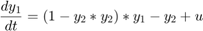
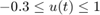

Dynamic Optimization with constraints
Contents
AMIGO_DO can handle non-linear path and point constraints as well as bounds on the stimuli. Path constraints and point constraints (except for end-point constraints) will be handled by forcing an integral measure of their violation to a value close to zero (violation tolerance). This will imply a modification of the model to incorporate constraint violation over time or at specific times.
Example
This is a well know dynamic optimization problem often used as a benchmark case for DO methods. The objective is to simultaneously minimize the amplitude of the oscillations and the control effort subject to the oscillator dynamics and maximum and minimum allowed values for the control .
REMARK: two path constraints are impossed: -0.4<=y_1(t) , t in [0,t_f] y_1(t)<=0, t in [0, t_f]


clear; %====================== % PATHS RELATED DATA %====================== inputs.pathd.results_folder='constrained_vpol'; % Folder to keep results (in Results\) inputs.pathd.short_name='cvpol'; % To identify figures and reports %====================== % MODEL RELATED DATA %====================== inputs.model.input_model_type='charmodelC'; % Model type inputs.model.n_st=5; % Number of states inputs.model.n_par=0; % Number of parameters inputs.model.n_stimulus=1; % Number of stimuli inputs.model.st_names=char('y1','y2','y3','yc1','yc2'); % Names of the states inputs.model.stimulus_names=char('uu'); % Names of the stimuli inputs.model.eqns=... % Model char('dy1=(1-y2*y2)*y1-y2+uu',... 'dy2=y1',... 'dy3=y1*y1+y2*y2+uu*uu',... 'dyc1=(fmax(y1,0))^2',... % Handles path constraint violation (see Figure) 'dyc2=(fmax(-0.4-y1,0))^2'); % Handles path constraint violation (see Figure)
%========================================== % Dynamic optimization problem formulation %========================================== inputs.DOsol.y0=[0 1 0 0 0]; % Initial conditions inputs.DOsol.tf_type='fixed'; % Experiments duration (fixed or free) inputs.DOsol.tf_guess=5; % COST FUNCTION inputs.DOsol.DOcost_type='min'; % max/min inputs.DOsol.DOcost='y3'; % ALGEBRAIC CONSTRAINTS % END POINT CONSTRAINTS. Note that to define PATH CONSTRAINTS new states have % to be added to the system dynamics. %This allows to transform Path into final-time constraints. % inputs.DOsol.n_const_eq_tf=0; % inputs.DOsol.const_eq_tf=[]; % c(y,u,tf)=0 % inputs.DOsol.eq_const_max_viol=1.0e-6; inputs.DOsol.n_const_ineq_tf=2; % Constraint violation must be close to zero inputs.DOsol.const_ineq_tf=char('yc1','yc2'); % c(y,u,tf)<=0 inputs.DOsol.ineq_const_max_viol=1.0e-6; % CVP DETAILS inputs.DOsol.u_interp='stepf'; % Stimuli interpolation inputs.DOsol.n_steps=20; % Number of steps inputs.DOsol.u_guess=0.4*ones(1,inputs.DOsol.n_steps); % Initial guess for the input inputs.DOsol.u_min=-0.3*ones(1,inputs.DOsol.n_steps); inputs.DOsol.u_max=1*ones(1,inputs.DOsol.n_steps); % Minimum and maximum value for the input inputs.DOsol.t_con=[0:5/inputs.DOsol.n_steps:5]; % Input swithching times %================================== % NUMERICAL METHDOS RELATED DATA %================================== % SIMULATION % Default for charmodel C: CVODES %OPTIMIZATION inputs.nlpsol.nlpsolver='local_fmincon'; % In this case the problem can be solved with % a local optimizer
More information regarding the inputs used in this example can be found here.
%================================ % CALL AMIGO2 from COMMAND LINE %================================ % It is recommended to keep all inputs in a 'problem_file'.m. % AMIGO2 DO task can be called as follows: AMIGO_Prep(inputs); AMIGO_DO(inputs);
***********************************
AMIGO2, Copyright @CSIC
AMIGO2_R2016a [Oct 2015]
***********************************
*Date: 10-Dec-2015
------>Pre processing....this may take a few seconds.
------>Checking inputs....
------> WARNING message
AMIGO_check_model: You did not specify inputs.model.exe_type, standard will be assumed
Warning: AMIGO_check_IVPsolver: Changing ivp solver to the only option
compatible with charmodelC, cvodes
Warning: AMIGO_check_IVPsolver: Changing sensitivities solver to, cvodes
------> Generating C code ...
------> Mexing files....
Building with 'MinGW64 Compiler (C)'.
D:\AMIGO2_REPO_2014\AMIGO2R2016\Kernel\IVP_solvers\cvodes\C_src4Amigo\src\src_amigo\simulate_amigo_model.c: In function 'simulate_amigo_model':
D:\AMIGO2_REPO_2014\AMIGO2R2016\Kernel\IVP_solvers\cvodes\C_src4Amigo\src\src_amigo\simulate_amigo_model.c:330:16: warning: passing argument 1 of 'mexPrintf' from incompatible pointer type
mexPrintf(stderr,"\nSolver failed at flag = CVode(cvode_mem, tout, y, &t, CV_TSTOP_RETURN);. . .\n");
^
In file included from D:\AMIGO2_REPO_2014\AMIGO2R2016\Kernel\IVP_solvers\cvodes\C_src4Amigo\include\include_amigo/simulate_amigo_model.h:4:0,
from D:\AMIGO2_REPO_2014\AMIGO2R2016\Kernel\IVP_solvers\cvodes\C_src4Amigo\src\src_amigo\simulate_amigo_model.c:1:
C:\MATLAB_R2015b_64/extern/include/mex.h:202:27: note: expected 'const char *' but argument is of type 'struct FILE *'
LIBMWMEX_API_EXTERN_C int mexPrintf(
^
D:\AMIGO2_REPO_2014\AMIGO2R2016\Kernel\IVP_solvers\cvodes\C_src4Amigo\src\src_interface\interface_with_matlab.c: In function 'mexFunction':
D:\AMIGO2_REPO_2014\AMIGO2R2016\Kernel\IVP_solvers\cvodes\C_src4Amigo\src\src_interface\interface_with_matlab.c:200:17: warning: assignment from incompatible pointer type
stats_struct = mxGetPr(plhs[5]);
^
MEX completed successfully.
------>Files generated....
***********************************
AMIGO2, Copyright @CSIC
AMIGO2_R2016a [Oct 2015]
***********************************
*Date: 10-Dec-2015
------>Checking inputs....
Warning: AMIGO_check_IVPsolver: Changing ivp solver to the only option
compatible with charmodelC, cvodes
Warning: AMIGO_check_IVPsolver: Changing sensitivities solver to, cvodes
Warning: Directory already exists.
The following files have been created:
ans =
D:\AMIGO2_REPO_2014\AMIGO2R2016\Results\constrained_vpol\AMIGO_DOcost_cvpol.m
ans =
D:\AMIGO2_REPO_2014\AMIGO2R2016\Results\constrained_vpol\AMIGO_DOconst_cvpol.m
*************************************************************************
------>IMPORTANT!!: Most of the optimization solvers have their own
tunning parameters (options).
Defaults have been assigned in the *NLPsolver*_options
files. You may need to modify those settings for your
particular problem, specially:
- maximum number of function evaluations /iterations,
- maximum computational time
******************************************************************
Solving the NLP problem with Local Optimizer: fmincon
Summary of selected local solver (fmincon) options:
maxeval: 500,
maxtime: 60
>Bounds on the unknowns:
v_guess(1)=0.400000; v_min(1)=-0.300000; v_max(1)=1.000000;
v_guess(2)=0.400000; v_min(2)=-0.300000; v_max(2)=1.000000;
v_guess(3)=0.400000; v_min(3)=-0.300000; v_max(3)=1.000000;
v_guess(4)=0.400000; v_min(4)=-0.300000; v_max(4)=1.000000;
v_guess(5)=0.400000; v_min(5)=-0.300000; v_max(5)=1.000000;
v_guess(6)=0.400000; v_min(6)=-0.300000; v_max(6)=1.000000;
v_guess(7)=0.400000; v_min(7)=-0.300000; v_max(7)=1.000000;
v_guess(8)=0.400000; v_min(8)=-0.300000; v_max(8)=1.000000;
v_guess(9)=0.400000; v_min(9)=-0.300000; v_max(9)=1.000000;
v_guess(10)=0.400000; v_min(10)=-0.300000; v_max(10)=1.000000;
v_guess(11)=0.400000; v_min(11)=-0.300000; v_max(11)=1.000000;
v_guess(12)=0.400000; v_min(12)=-0.300000; v_max(12)=1.000000;
v_guess(13)=0.400000; v_min(13)=-0.300000; v_max(13)=1.000000;
v_guess(14)=0.400000; v_min(14)=-0.300000; v_max(14)=1.000000;
v_guess(15)=0.400000; v_min(15)=-0.300000; v_max(15)=1.000000;
v_guess(16)=0.400000; v_min(16)=-0.300000; v_max(16)=1.000000;
v_guess(17)=0.400000; v_min(17)=-0.300000; v_max(17)=1.000000;
v_guess(18)=0.400000; v_min(18)=-0.300000; v_max(18)=1.000000;
v_guess(19)=0.400000; v_min(19)=-0.300000; v_max(19)=1.000000;
v_guess(20)=0.400000; v_min(20)=-0.300000; v_max(20)=1.000000;
-----------------------------------------------
Initial value problem related active settings
-----------------------------------------------
ivpsolver: cvodes
RelTol: 1e-07
AbsTol: 1e-07
MaxStepSize: Inf
MaxNumberOfSteps: 100000
Local search number: 1
Call local solver: FMINCON
Initial point function value: 12.167108
First-order Norm of
Iter F-count f(x) Feasibility optimality step
0 21 1.216711e+01 5.312e+00 4.193e+00
1 42 3.802069e+00 5.927e-03 2.247e+00 1.115e+00
2 64 3.351467e+00 0.000e+00 1.617e+00 3.490e-01
3 86 3.136086e+00 1.280e-01 1.726e+00 3.049e-01
4 108 3.049993e+00 3.407e-02 4.844e-01 1.014e-01
5 130 3.032287e+00 1.655e-02 2.169e-01 3.382e-02
6 152 3.030187e+00 9.086e-03 1.021e-01 2.370e-02
7 173 2.953034e+00 1.598e-03 8.936e-02 1.848e-01
8 195 3.011708e+00 8.386e-05 6.337e-01 1.831e-01
9 217 2.978913e+00 7.188e-05 4.911e-01 7.645e-02
10 239 2.957314e+00 1.756e-04 6.719e-02 5.719e-02
11 261 2.963181e+00 9.375e-05 2.598e-01 2.630e-02
12 283 2.970403e+00 3.207e-05 1.196e-01 2.492e-02
13 305 2.973149e+00 1.402e-05 3.443e-01 1.933e-02
14 327 2.976211e+00 3.966e-06 2.315e-01 1.136e-02
15 349 2.977384e+00 1.204e-06 3.256e-01 8.294e-03
16 371 2.979186e+00 0.000e+00 2.502e-01 8.095e-03
17 393 2.979005e+00 0.000e+00 3.340e-01 1.218e-02
18 415 2.980611e+00 0.000e+00 2.943e-01 1.716e-02
19 437 2.981644e+00 0.000e+00 6.099e-01 1.195e-02
20 459 2.980751e+00 0.000e+00 9.218e-02 4.335e-03
21 481 2.979105e+00 0.000e+00 3.687e-01 7.832e-03
22 503 2.980313e+00 0.000e+00 2.117e-01 5.263e-03
23 525 2.979398e+00 0.000e+00 1.721e-01 1.384e-02
24 547 2.979999e+00 0.000e+00 1.181e+00 9.417e-03
25 569 2.980628e+00 0.000e+00 5.734e-01 6.369e-03
26 590 2.980210e+00 0.000e+00 2.405e-01 3.670e-03
27 611 2.979750e+00 0.000e+00 1.072e-01 4.511e-03
28 633 2.979842e+00 0.000e+00 1.516e-01 1.278e-03
29 654 2.979874e+00 0.000e+00 1.355e-01 7.681e-04
30 677 2.979849e+00 0.000e+00 4.436e-02 1.186e-03
First-order Norm of
Iter F-count f(x) Feasibility optimality step
31 698 2.979803e+00 0.000e+00 2.000e-02 1.069e-03
32 719 2.972576e+00 1.119e-07 8.652e-01 5.983e-02
33 740 2.971447e+00 0.000e+00 2.188e-01 7.652e-02
34 761 2.972469e+00 0.000e+00 9.960e-02 3.166e-02
35 782 2.972417e+00 0.000e+00 4.655e-02 1.520e-03
36 803 2.972381e+00 0.000e+00 4.289e-02 2.407e-03
37 826 2.972406e+00 0.000e+00 4.808e-02 1.494e-03
38 847 2.972423e+00 0.000e+00 2.881e-02 7.842e-04
39 868 2.972432e+00 0.000e+00 1.807e-02 5.229e-04
40 889 2.972435e+00 0.000e+00 9.065e-03 3.617e-04
41 910 2.972434e+00 0.000e+00 4.000e-03 2.598e-04
42 931 2.971232e+00 0.000e+00 2.594e-01 2.800e-02
43 952 2.970492e+00 0.000e+00 5.652e-02 1.374e-02
44 973 2.970569e+00 0.000e+00 3.542e-02 3.752e-03
45 994 2.970554e+00 0.000e+00 8.663e-03 1.164e-03
46 1015 2.970553e+00 0.000e+00 5.398e-03 6.998e-04
47 1036 2.970552e+00 0.000e+00 2.973e-03 3.015e-04
48 1057 2.970552e+00 0.000e+00 1.542e-03 1.109e-04
49 1078 2.970551e+00 0.000e+00 8.004e-04 9.733e-05
50 1099 2.970551e+00 0.000e+00 8.000e-04 4.588e-05
51 1120 2.970106e+00 0.000e+00 1.004e-01 6.320e-03
52 1141 2.969988e+00 0.000e+00 3.598e-02 1.886e-03
53 1162 2.969988e+00 0.000e+00 2.460e-02 8.310e-04
54 1183 2.969961e+00 0.000e+00 7.531e-03 1.793e-03
55 1204 2.969954e+00 0.000e+00 3.240e-03 7.616e-04
56 1227 2.969951e+00 0.000e+00 1.526e-03 4.147e-04
57 1248 2.969949e+00 0.000e+00 6.320e-04 4.664e-04
58 1269 2.969949e+00 0.000e+00 6.503e-04 7.230e-05
59 1290 2.969949e+00 0.000e+00 1.600e-04 1.056e-04
60 1311 2.969790e+00 0.000e+00 1.410e-02 2.438e-03
First-order Norm of
Iter F-count f(x) Feasibility optimality step
61 1332 2.969762e+00 0.000e+00 2.048e-02 1.765e-03
62 1353 2.969765e+00 0.000e+00 4.967e-03 1.678e-03
63 1375 2.969766e+00 0.000e+00 2.508e-03 8.029e-04
64 1396 2.969765e+00 0.000e+00 4.803e-04 3.594e-04
65 1417 2.969765e+00 0.000e+00 4.368e-05 1.803e-04
66 1438 2.969765e+00 0.000e+00 4.124e-05 4.545e-05
67 1459 2.969765e+00 0.000e+00 3.200e-05 2.336e-05
68 1480 2.969724e+00 0.000e+00 2.883e-03 7.015e-04
69 1501 2.969723e+00 0.000e+00 1.531e-03 2.705e-04
70 1522 2.969720e+00 0.000e+00 5.148e-04 1.803e-04
71 1543 2.969720e+00 0.000e+00 1.226e-04 8.228e-05
72 1564 2.969720e+00 0.000e+00 2.925e-05 2.164e-05
73 1585 2.969720e+00 0.000e+00 1.834e-05 1.483e-05
Local minimum possible. Constraints satisfied.
fmincon stopped because the size of the current step is less than
the selected value of the step size tolerance and constraints are
satisfied to within the selected value of the constraint tolerance.
Local solution function value: 2.969720
Number of function evaluations in the local search: 3171
CPU Time of the local search: 6.901392 seconds
----------------------------------------
>>>> DYNAMIC OPTIMIZATION:
----------------------------------------
>>>> Best objective function: min = 2.969720e+00
>>>> Best control profile:
>>>> Control u: 1
-0.096755 0.487620 0.926472 0.925015 0.872982 0.822404 0.821893 0.806565 0.738465 0.639727 0.527837 0.415421 0.310877 0.219205 0.142888 0.082635 0.038003 0.007897 -0.009115 -0.013021
>>>> Switching times:
0.000000 0.250000 0.500000 0.750000 1.000000 1.250000 1.500000 1.750000 2.000000 2.250000 2.500000 2.750000 3.000000 3.250000 3.500000 3.750000 4.000000 4.250000 4.500000 4.750000 5.000000
>>>> Final time: 5.000000
>>>> Constraints violation (c<=0): Equality constraints, Inequality constraints, Control constraints
c(1)=8.96e-07;
c(2)=9.94e-07;
------>Plotting results....
Sorry, convergence curve plot is not available for local solvers, at the moment
<strong>
------>Results (report and struct_results.mat) and plots were kept in the directory:
</strong><strong>D:\AMIGO2_REPO_2014\AMIGO2R2016\Results\constrained_vpol\OD_cvpol_local_fmincon_run1</strong>
Click <a href="matlab: cd('D:\AMIGO2_REPO_2014\AMIGO2R2016\Results\constrained_vpol\OD_cvpol_local_fmincon_run1')">here</a> to go to the results folder or <a href="matlab: load('D:\AMIGO2_REPO_2014\AMIGO2R2016\Results\constrained_vpol\OD_cvpol_local_fmincon_run1\strreport_cvpol_run1.mat')">here</a> to load the results.
See also
- IVP solvers
- How to input a problem in AMIGO
- How to solve unconstrained dynamic optimization problems
- How to re-optimize to refine stimulation profiles in CVP
- How to solve multi-objective dynamic optimization problems
- How to solve multi-objective dynamic optimization problems with the weighted sum method (WSM)
References
Vassiliadis, V. S.; Balsa-Canto, E.; Banga, J. R. Second order sensitivities of general dynamic systems with application to optimal control problems. Chem. Eng. Sci. 1999, 54, 3851.
AMIGO_htmldoc_inputs(inputs,fullfile(pwd,'html','doinputsc.html'));
Error using fprintf Invalid file identifier. Use fopen to generate a valid file identifier. Error in AMIGO_htmldoc_inputs (line 22) fprintf(fid,'<!DOCTYPE html>\n'); Error in doc_AMIGO_DO_const (line 160) AMIGO_htmldoc_inputs(inputs,fullfile(pwd,'html','doinputsc.html'));